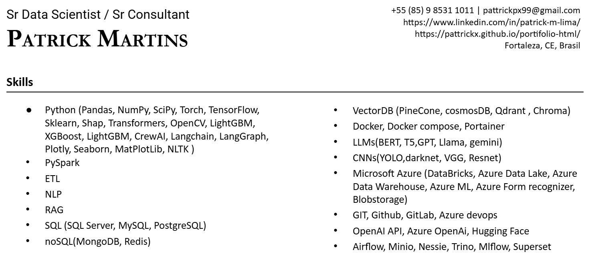
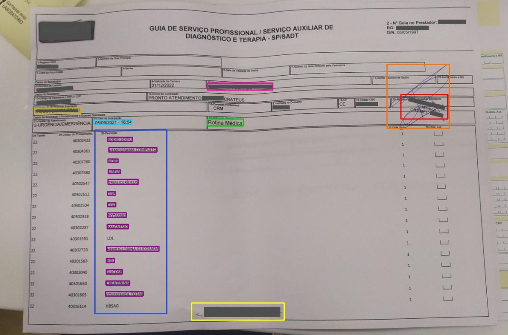

Resume



An intelligent document-processing solution designed to extract structured information from unstructured documents using OCR, computer vision, and NLP techniques. The system automates header extraction, signature and stamp detection, and textual description analysis to reduce manual review and improve data processing efficiency.

This project develops an automatic summarization system for Brazilian Federal Supreme Court (STF) rulings using NLP and deep learning models such as T5 and BERT. The study applies data preprocessing, linguistic analysis, and evaluation metrics to compare machine-generated summaries with human-written summaries.

An AI-powered invoice processing solution designed to automate data extraction, classification, and report generation from structured and unstructured financial documents. The system combines OCR, NLP, LLM workflows, and Python-based automation to significantly reduce manual effort, processing time, and operational costs.

An AI-based computer vision solution designed to detect, segment, and reconstruct road networks from satellite imagery using polygon processing and graph generation techniques. The project combines segmentation models, geometric analysis, and post-processing algorithms to create detailed and connected urban road maps for smart-city and urban planning applications.

Donec eget ex magna. Interdum et malesuada fames ac ante ipsum primis in faucibus. Pellentesque venenatis dolor imperdiet dolor mattis sagittis magna etiam.

Donec eget ex magna. Interdum et malesuada fames ac ante ipsum primis in faucibus. Pellentesque venenatis dolor imperdiet dolor mattis sagittis magna etiam.